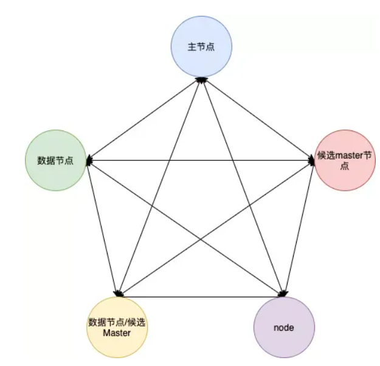
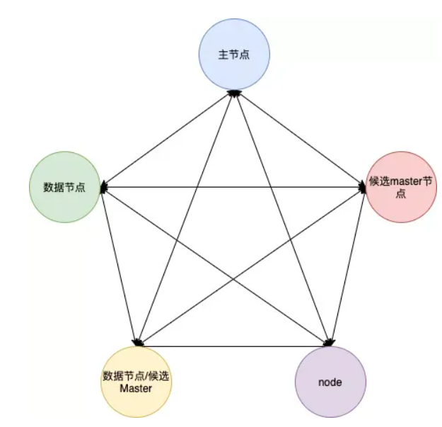
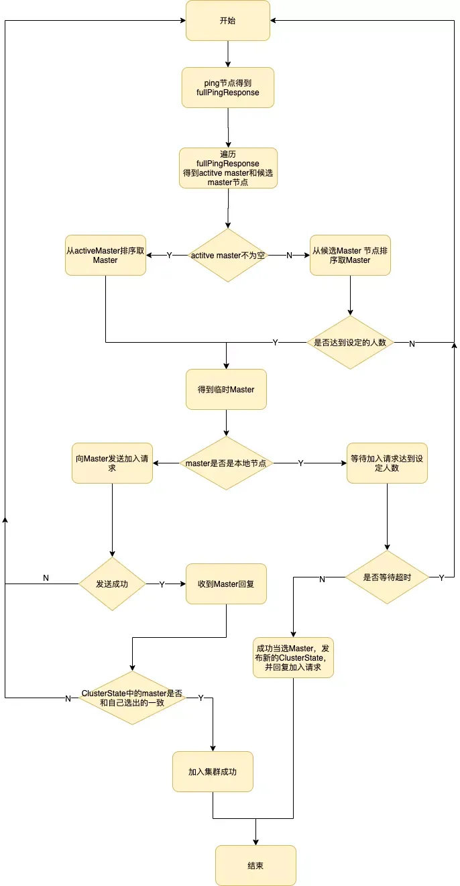
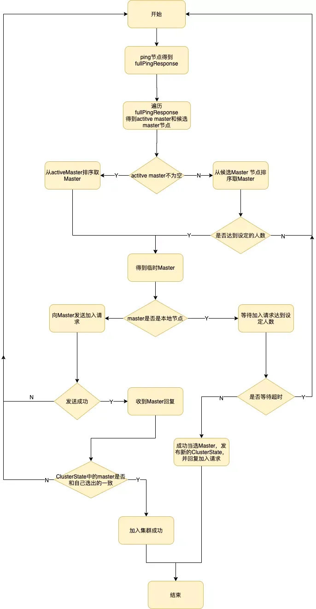

elasticsearch 原理 #
集群 #
一个ES集群可以有多个节点构成，一个节点就是一个ES服务实例，通过配置集群名称cluster.name加入集群。
ES中节点有角色的区分的，通过配置文件conf/elasticsearch.yml中配置以下配置进行角色的设定。
node.master: true/false
node.data: true/false
集群中单个节点既可以是候选主节点也可以是数据节点，通过上面的配置可以进行两两组合形成四大分类：
- （1）仅为候选主节点
- （2）既是候选主节点也是数据节点
- （3）仅为数据节点
- （4）既不是候选主节点也不是数据节点
-
集群 有多个node节点(master node,data node,replica node) 主节点和副节点 每个节点可能存储数据也可能只是作为我单独的Lucene 索引实例
-
主节点
主节点只有一个(es集群中只使用一个masterNode) 主节点可以提前确定某一个节点为主节点,后面版本是配置候选主节点 然后用一套算法推举出主节点 一个节点宕机以后 后面的候选节点从算法中重新产生一个
 

 

当一个节点被选举成为 主 节点时， 它将负责管理集群范围内的所有变更，例如增加、删除索引，或者增加、删除节点等。 而主节点并不需要涉及到文档级别的变更和搜索等操作，所以当集群只拥有一个主节点的情况下，即使流量的增加它也不会成为瓶颈。 任何节点都可以成为主节点。我们的示例集群就只有一个节点，所以它同时也成为了主节点
- 协调节点
用户的请求可以随机发往任何一个节点，并由该节点负责分发请求、收集结果等操作，而不需要主节点转发。这种节点可称之为协调节点，集群中的任何节点都可以充当协调节点的角色。每个节点之间都会保持联系
- 例子1
#集群名称，三台集群，要配置相同的集群名称！！！
#cluster.name: my-application
cluster.name: my-bootstrap
# ------------------------------------ Node ------------------------------------
#node.name: node-1
#节点名称
node.name: node-3
#是不是有资格主节点
node.master: true
#是否存储数据
node.data: true
#最⼤集群节点数
node.max_local_storage_nodes: 3
#网关地址
network.host: localhost
#http.port: 9200
# http端口 (对外端口)
http.port: 9202
#内部节点之间沟通端⼝
transport.tcp.port: 9302
#discovery.seed_hosts: ["host1", "host2"]
# es7.x之后新增的配置，写入候选主节点的设备地址，在开启服务后可以被选为主节点
discovery.seed_hosts: ["127.0.0.1:9300", "127.0.0.1:9301", "127.0.0.1:9302"]
# Bootstrap the cluster using an initial set of master-eligible nodes:
#cluster.initial_master_nodes: ["node-1", "node-2"]
# es7.x之后新增的配置，初始化一个新的集群时需要此配置来选举master
cluster.initial_master_nodes: ["node-1", "node-2", "node-3"]
bootstrap.system_call_filter: false
http.cors.allow-origin: "*"
http.cors.enabled: true
http.cors.allow-headers : X-Requested-With,X-Auth-Token,Content-Type,Content-Length,Authorization
http.cors.allow-credentials: true
master node [“node-1”, “node-2”, “node-3”]
假如刚好算法推举出node-1 那么此时此刻node-1就是主节点
客户端请求任一个node 那么该node就是协调节点 比如正好是node-2 那么node-2就是协调节点
候选主节点主节点有1和2 从initial_master_nodes中推举出来主节点 主节点：负责索引的添加、删除，跟踪哪些节点是群集的一部分，对分片进行分配、收集集群中各节点的状态等，稳定的主节点对集群的健康是非常重要。 进来后由负载均衡判断 假如主节点请求1节点处理 那么1节点就作为了协调节点,然后1节点将请求发给各个分节点; 分节点再向各个分片发送检索请求; 分片检索结果在节点合并; 各个节点结果在协调节点合并; 协调节点合并并且后续操作完成以后才把结果响应给客服端。
倒排索引 #
要讲明白什么是倒排索引，首先我们先梳理下什么索引，比如一本书，书的目录页，有章节，章节名称，我们想看哪个章节，我们通过目录页，查到对应章节和页码，就能定位到具体的章节内容，通过目录页的章节名称查到章节的页码，进而看到章节内容，这个过程就是一个索引的过程，那么什么是倒排索引呢？
比如查询《java编程思想》这本书的文章，翻开书本可以看到目录页，记录这个章节名字和章节地址页码，通过查询章节名字“继承”可以定位到“继承”这篇章节的具体地址，查看到文章的内容，我们可以看到文章内容中包含很多“对象”这个词。
那么如果我们要在这本书中查询所有包含有“对象”这个词的文章，那该怎么办呢？
按照现在的索引方式无疑大海捞针，假设我们有一个“对象”–→文章的映射关系，不就可以了吗？类似这样的反向建立映射关系的就叫倒排索引。
如图所示，将文章进行分词后得到关键词，在根据关键词建立倒排索引，关键词构建成一个词典，词典中存放着一个个词条（关键词），每个关键词都有一个列表与其对应，这个列表就是倒排表，存放的是章节文档编号和词频等信息，倒排列表中的每个元素就是一个倒排项，最后可以看到，整个倒排索引就像一本新华字典，所有单词的倒排列表往往顺序地存储在磁盘的某个文件里，这个文件被称之为倒排文件。


索引 #
-
ES将数据存储于一个或多个索引中，索引是具有类似特性的文档的集合
-
primary shard(主分片) 每个主分片都有一个复制分片 因此一个主分片的副分片是大于等于1
-
一个分片(shard)是一个最小级别“工作单元(worker unit)”，它只是保存了索引中所有数据的一部分。
-
索引中的每个文档属于一个单独的主分片，所以主分片的数量决定了索引最多能存储多少数据
-
索引 [ {id:“1”,name:“张三”} , {id:“2”,name:“李四”} ,{id:“3”,name:“王麻子”} ]
-
分片1 [{id:“1”,name:“张三”} , {id:“2”,name:“李四”}]
-
分片2 [{id:“3”,name:“王麻子”} ]
分段 #
实际上分段也是一个索引 一个索引下面有很多分段 分段下包含了文档和文档索引等
节点 #
分片和副本 #
- 准备数据
http://127.0.0.1:9200/index_node1
{
"settings": {
"index": {
"number_of_shards": 2,
"number_of_replicas": 1
}
},
"mappings": {
"properties": {
"title": {
"type": "text"
}
}
}
}
http://127.0.0.1:9201/index_node2
{
"settings": {
"index": {
"number_of_shards": 2,
"number_of_replicas": 1
}
},
"mappings": {
"properties": {
"title": {
"type": "text"
}
}
}
}
http://127.0.0.1:9202/index_node3
{
"settings": {
"index": {
"number_of_shards": 2,
"number_of_replicas": 1
}
},
"mappings": {
"properties": {
"title": {
"type": "text"
}
}
}
}
-
先看数据
-
elasticsearch-cluster\elasticsearch-node-1\data\nodes\0\indices 索引
-6jNd3ADSB-h8ezjctJynw
0eZnn7K1Q8aC9DMWAXQEoQ
1n88hWQ6RIiBdkl4T_UkZQ
8wWe-fscTLO9VYEi_fNm-Q
9sIkQ5C6Sy2tchu9QoeZGg
AAdjmcQ-S_Ca0DtAqwDbqg
BpEJkkh2RCKpWKMfBgBaBw
cWxPFZ81TqKJWTq_EdOsEA
FcDp0ujtTU63x6u8YTuWTw
IZVh3QEtTb-QDl5go8UP8g
KEEQFdt3RxCDicSCl0eg0g
KLV8BfnjR1awSNnTXiWrJg
KRexSOorR1it17bSClzGSg
LSO_rZUkTT-UODXoQo8Gxw
pawJ4cqlRlqZd2xNWe4ppw
RZA-jjbuTGKI9VPQD6nvHA
wxKwqAHySzOXSPL3f-DHlA
yjt6OOuES56ihJmrt0-EHA
- elasticsearch-cluster\elasticsearch-node-2\data\nodes\0\indices 索引
-6jNd3ADSB-h8ezjctJynw
0eZnn7K1Q8aC9DMWAXQEoQ
9sIkQ5C6Sy2tchu9QoeZGg
AAdjmcQ-S_Ca0DtAqwDbqg
cWxPFZ81TqKJWTq_EdOsEA
FcDp0ujtTU63x6u8YTuWTw
Hb1HIqQLSoOaj_Ke50JThQ
IZVh3QEtTb-QDl5go8UP8g
Jz9F8MFNT7mT8s7tkbRqzg
KLV8BfnjR1awSNnTXiWrJg
KRexSOorR1it17bSClzGSg
leckoQnzTWycaQi_rIvmoQ
LSO_rZUkTT-UODXoQo8Gxw
nBIHE-LcRtiF0VQ_8tpItg
RmepfbFFStyOM4IwialfBw
RVnE2XYeQhyYTO1qQq3SYw
UgwFKXBLRKu2Tu_UJWfZow
wNdmgVw2SIujPhZuKV3kGA
- elasticsearch-cluster\elasticsearch-node-3\data\nodes\0\indices 索引
-6jNd3ADSB-h8ezjctJynw
1n88hWQ6RIiBdkl4T_UkZQ
8wWe-fscTLO9VYEi_fNm-Q
AAdjmcQ-S_Ca0DtAqwDbqg
BpEJkkh2RCKpWKMfBgBaBw
cWxPFZ81TqKJWTq_EdOsEA
FcDp0ujtTU63x6u8YTuWTw
Hb1HIqQLSoOaj_Ke50JThQ
Jz9F8MFNT7mT8s7tkbRqzg
KEEQFdt3RxCDicSCl0eg0g
leckoQnzTWycaQi_rIvmoQ
nBIHE-LcRtiF0VQ_8tpItg
pawJ4cqlRlqZd2xNWe4ppw
RmepfbFFStyOM4IwialfBw
RVnE2XYeQhyYTO1qQq3SYw
RZA-jjbuTGKI9VPQD6nvHA
UgwFKXBLRKu2Tu_UJWfZow
wNdmgVw2SIujPhZuKV3kGA
wxKwqAHySzOXSPL3f-DHlA
yjt6OOuES56ihJmrt0-EHA
- http://localhost:9200/_cat/indices?v&pretty 查看集群所有索引
health status index uuid pri rep docs.count docs.deleted store.size pri.store.size
green open .monitoring-es-7-2023.07.30 0eZnn7K1Q8aC9DMWAXQEoQ 1 1 4969 3378 6.6mb 3.2mb
green open .triggered_watches RZA-jjbuTGKI9VPQD6nvHA 1 1 3 0 31.7kb 28.1kb
green open movie RVnE2XYeQhyYTO1qQq3SYw 1 1 100 0 78.8kb 39.4kb
green open .apm-agent-configuration Hb1HIqQLSoOaj_Ke50JThQ 1 1 0 0 416b 208b
green open .monitoring-es-7-2023.08.05 UgwFKXBLRKu2Tu_UJWfZow 1 1 21760 10800 39.1mb 19.5mb
green open index_node cWxPFZ81TqKJWTq_EdOsEA 2 1 1 0 7.3kb 3.6kb
green open .monitoring-es-7-2023.08.04 9sIkQ5C6Sy2tchu9QoeZGg 1 1 35954 51828 41.8mb 20.9mb
green open .kibana_1 BpEJkkh2RCKpWKMfBgBaBw 1 1 106 18 177.5kb 88.7kb
green open .kibana-event-log-7.8.0-000001 leckoQnzTWycaQi_rIvmoQ 1 1 4 0 41.2kb 20.6kb
green open book2 KRexSOorR1it17bSClzGSg 1 1 0 0 416b 208b
green open cars 8wWe-fscTLO9VYEi_fNm-Q 1 1 8 0 10.4kb 5.2kb
green open .monitoring-kibana-7-2023.08.05 yjt6OOuES56ihJmrt0-EHA 1 1 111 0 156.7kb 78.2kb
green open .apm-custom-link IZVh3QEtTb-QDl5go8UP8g 1 1 0 0 416b 208b
green open .kibana_task_manager_1 wxKwqAHySzOXSPL3f-DHlA 1 1 5 5 21.3kb 10.6kb
green open .monitoring-kibana-7-2023.07.30 KEEQFdt3RxCDicSCl0eg0g 1 1 188 0 271.8kb 135.9kb
green open .monitoring-alerts-7 wNdmgVw2SIujPhZuKV3kGA 1 1 6 0 74.5kb 37.2kb
green open index_node1 -6jNd3ADSB-h8ezjctJynw 2 1 1 0 7.3kb 3.6kb
green open index_node2 AAdjmcQ-S_Ca0DtAqwDbqg 2 1 1 0 15.9kb 7.9kb
green open index_node3 FcDp0ujtTU63x6u8YTuWTw 2 1 0 0 832b 416b
green open .watches Jz9F8MFNT7mT8s7tkbRqzg 1 1 6 183 769.1kb 487.1kb
green open user pawJ4cqlRlqZd2xNWe4ppw 1 1 4 0 10.1kb 5kb
green open shopping KLV8BfnjR1awSNnTXiWrJg 1 1 1 0 16.5kb 8.2kb
我们可以发现每个节点下面都有其它节点的索引 当不是本节点创建的索引 那么这个索引就是分片索引,并且 分片索引具体再哪些节点去创建也是es根据规则计算出来的
http://127.0.0.1:9202/index_node3x post
{
"settings": {
"index": {
"number_of_shards": 1,
"number_of_replicas": 1
}
},
"mappings": {
"properties": {
"title": {
"type": "text"
}
}
}
}
创建完毕实际我们再node3和node2分别找到了index_node3x的索引 所以number_of_shards虽然设置了1 但实际还是分片=2
分片 #
ES支持PB级全文搜索，通常我们数据量很大的时候，查询性能都会越来越慢， 我们能想到的一个方式的将数据分散到不同的地方存储，ES也是如此， ES通过水平拆分的方式将一个索引上的数据拆分出来分配到不同的数据块上，拆分出来的数据库块称之为一个分片Shard，很像MySQL的分库分表。
不同的主分片分布在不同的节点上，那么在多分片的索引中数据应该被写入哪里？ 肯定不能随机写，否则查询的时候就无法快速检索到对应的数据了， 这需要有一个路由策略来确定具体写入哪一个分片中，怎么路由我们下文会介绍。 在创建索引的时候需要指定分片的数量，并且分片的数量一旦确定就不能修改。
副本 #
副本就是对分片的复制，每个主分片都有一个或多个副本分片，当主分片异常时，副本可以提供数据的查询等操作。主分片和对应的副本分片是不会在同一个节点上的，避免数据的丢失，当一个节点宕机的时候，还可以通过副本查询到数据，副本分片数的最大值是 N-1（其中 N 为节点数）。
对doc的新建、索引和删除请求都是写操作，这些写操作是必须在主分片上完成，然后才能被复制到对应的副本上。ES为了提高写入的能力这个过程是并发写的，同时为了解决并发写的过程中数据冲突的问题，ES通过乐观锁的方式控制，每个文档都有一个 _version号，当文档被修改时版本号递增。
一旦所有的副本分片都报告写成功才会向协调节点报告成功，协调节点向客户端报告成功。


Elasticsearch 的写索引流程 #
上面提到了写索引是只能写在主分片上，然后同步到副本分片，那么如上图所示，这里有四个主分片分别是S0、S1、S2、S3，一条数据是根据什么策略写到指定的分片上呢？这条索引数据为什么被写到S0上而不写到 S1 或 S2 上？这个过程是根据下面这个公式决定的。
shard = hash(routing) % number_of_primary_shards
以上公式的值是在0到number_of_primary_shards-1之间的余数，也就是数据文档所在分片的位置。routing通过Hash函数生成一个数字，然后这个数字再除以number_of_primary_shards（主分片的数量）后得到余数。routing是一个可变值，默认是文档的_id ，也可以设置成一个自定义的值。
在一个写请求被发送到某个节点后，该节点按照前文所述，会充当协调节点，会根据路由公式计算出写哪个分片，当前节点有所有其他节点的分片信息，如果发现对应的分片是在其他节点上，再将请求转发到该分片的主分片节点上。
在ES集群中每个节点都通过上面的公式知道数据的在集群中的存放位置，所以每个节点都有接收读写请求的能力。
那么为什么在创建索引的时候就确定好主分片的数量，并且不可修改？因为如果数量变化了，那么所有之前路由计算的值都会无效，数据也就再也找不到了。


如上图所示，当前一个数据通过路由计算公式得到的值是 shard=hash(routing)%4=0，则具体流程如下：
- （1）数据写请求发送到 node1 节点，通过路由计算得到值为1，那么对应的数据会应该在主分片S1上。
- （2）node1节点将请求转发到 S1 主分片所在的节点node2，node2 接受请求并写入到磁盘。
- （3）并发将数据复制到三个副本分片R1上，其中通过乐观并发控制数据的冲突。一旦所有的副本分片都报告成功，则节点 node2将向node1节点报告成功，然后node1节点向客户端报告成功。
这种模式下，只要有副本在，写入延时最小也是两次单分片的写入耗时总和，效率会较低，但是这样的好处也很明显，避免写入后单个机器硬件故障导致数据丢失，在数据完整性和性能方面，一般都是优先选择数据，除非一些允许丢数据的特殊场景。
在ES里为了减少磁盘IO保证读写性能，一般是每隔一段时间（比如30分钟）才会把数据写入磁盘持久化，对于写入内存，但还未flush到磁盘的数据，如果发生机器宕机或者掉电，那么内存中的数据也会丢失，这时候如何保证？
对于这种问题，ES借鉴数据库中的处理方式，增加CommitLog模块，在ES中叫transLog，在下面的ES存储原理中会介绍。
存储原理 #
上面介绍了在ES内部的写索引处理流程，数据在写入到分片和副本上后，目前数据在内存中，要确保数据在断电后不丢失，还需要持久化到磁盘上。
我们知道ES是基于Lucene实现的，内部是通过Lucene完成的索引的创建写入和搜索查询，Lucene 工作原理如下图所示，当新添加一片文档时，Lucene进行分词等预处理，然后将文档索引写入内存中，并将本次操作写入事务日志（transLog），transLog类似于mysql的binlog，用于宕机后内存数据的恢复，保存未持久化数据的操作日志。
默认情况下，Lucene每隔1s(refresh_interval配置项)将内存中的数据刷新到文件系统缓存中，称为一个segment（段）。一旦刷入文件系统缓存，segment才可以被用于检索，在这之前是无法被检索的。
因此refresh_interval决定了ES数据的实时性，因此说ES是一个准实时的系统。segment 在磁盘中是不可修改的，因此避免了磁盘的随机写，所有的随机写都在内存中进行。随着时间的推移，segment越来越多，默认情况下，Lucene每隔30min或segment 空间大于512M，将缓存中的segment持久化落盘，称为一个commit point，此时删掉对应的transLog。
当我们在进行写操作的测试的时候，可以通过手动刷新来保障数据能够被及时检索到，但是不要在生产环境下每次索引一个文档都去手动刷新，刷新操作会有一定的性能开销。一般业务场景中并不都需要每秒刷新。
可以通过在 Settings 中调大 refresh_interval = “30s” 的值，来降低每个索引的刷新频率，设值时需要注意后面带上时间单位，否则默认是毫秒。当 refresh_interval=-1 时表示关闭索引的自动刷新。


索引文件分段存储并且不可修改，那么新增、更新和删除如何处理呢？ #
- 新增，新增很好处理，由于数据是新的，所以只需要对当前文档新增一个段就可以了。
- 删除，由于不可修改，所以对于删除操作，不会把文档从旧的段中移除而是通过新增一个 .del 文件，文件中会列出这些被删除文档的段信息，这个被标记删除的文档仍然可以被查询匹配到， 但它会在最终结果被返回前从结果集中移除。
- 更新，不能修改旧的段来进行文档的更新，其实更新相当于是删除和新增这两个动作组成。会将旧的文档在 .del 文件中标记删除，然后文档的新版本中被索引到一个新的段。可能两个版本的文档都会被一个查询匹配到，但被删除的那个旧版本文档在结果集返回前就会被移除。
segment被设定为不可修改具有一定的优势也有一定的缺点。
优点：
- 不需要锁。如果你从来不更新索引，你就不需要担心多进程同时修改数据的问题。
- 一旦索引被读入内核的文件系统缓存，便会留在哪里，由于其不变性。只要文件系统缓存中还有足够的空间，那么大部分读请求会直接请求内存，而不会命中磁盘。这提供了很大的性能提升.
- 其它缓存(像 Filter 缓存)，在索引的生命周期内始终有效。它们不需要在每次数据改变时被重建，因为数据不会变化。
- 写入单个大的倒排索引允许数据被压缩，减少磁盘 I/O 和需要被缓存到内存的索引的使用量。
缺点：
- 当对旧数据进行删除时，旧数据不会马上被删除，而是在 .del 文件中被标记为删除。而旧数据只能等到段更新时才能被移除，这样会造成大量的空间浪费。
- 若有一条数据频繁的更新，每次更新都是新增新的，标记旧的，则会有大量的空间浪费。
- 每次新增数据时都需要新增一个段来存储数据。当段的数量太多时，对服务器的资源例如文件句柄的消耗会非常大。
- 在查询的结果中包含所有的结果集，需要排除被标记删除的旧数据，这增加了查询的负担。
段合并 #
由于每当刷新一次就会新建一个segment（段），这样会导致短时间内的段数量暴增，而segment数目太多会带来较大的麻烦。大量的segment会影响数据的读性能。每一个segment都会消耗文件句柄、内存和CPU 运行周期。
更重要的是，每个搜索请求都必须轮流检查每个segment然后合并查询结果，所以segment越多，搜索也就越慢。
因此Lucene会按照一定的策略将segment合并，合并的时候会将那些旧的已删除文档从文件系统中清除。被删除的文档不会被拷贝到新的大segment中。
合并的过程中不会中断索引和搜索，倒排索引的数据结构使得文件的合并是比较容易的。
段合并在进行索引和搜索时会自动进行，合并进程选择一小部分大小相似的段，并且在后台将它们合并到更大的段中，这些段既可以是未提交的也可以是已提交的。
合并结束后老的段会被删除，新的段被刷新到磁盘，同时写入一个包含新段且排除旧的和较小的段的新提交点，新的段被打开，可以用来搜索。段合并的计算量庞大，而且还要吃掉大量磁盘 I/O，并且段合并会拖累写入速率，如果任其发展会影响搜索性能。
ES在默认情况下会对合并流程进行资源限制，所以搜索性能可以得到保证。